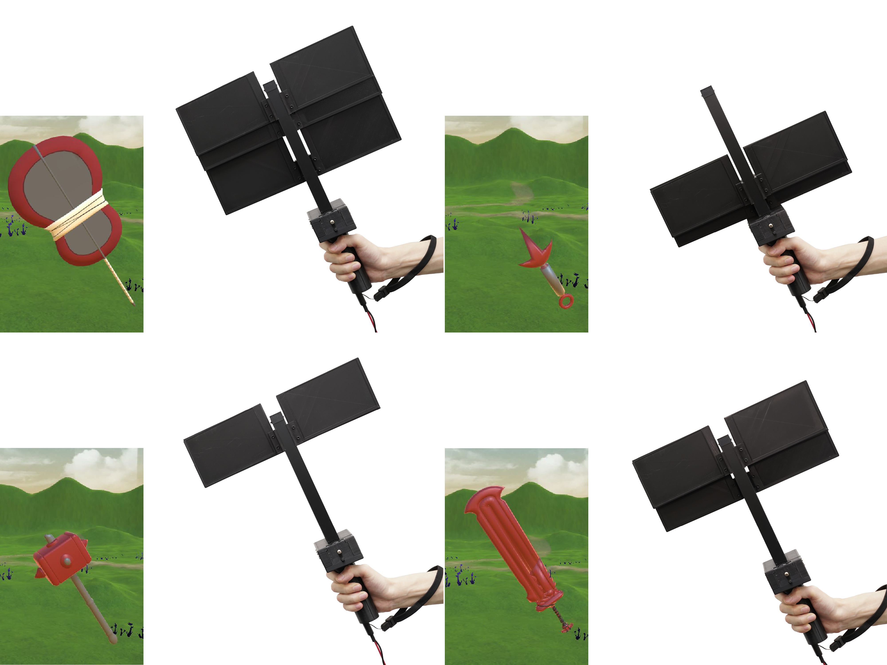
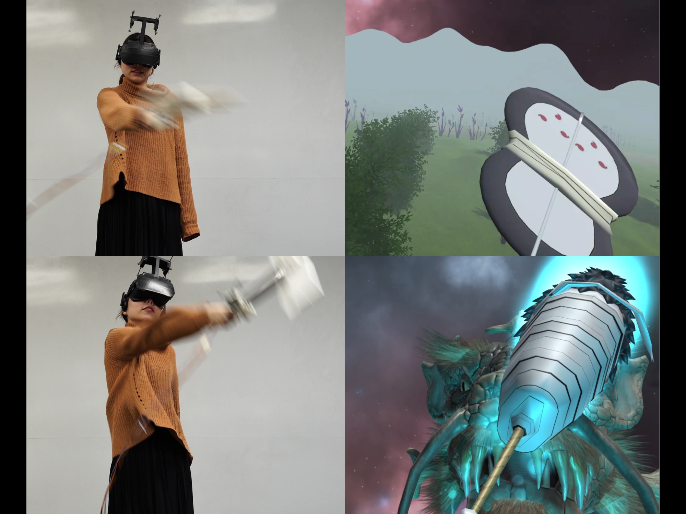

ShapeSense
Description
ShapeSense is a handheld VR device with moving surfaces for rendering various shape perceptions with a single device. ShapeSense can simultaneously control mass properties and air resistance for representing an object shape seen in VR. We constructed a shape perception model between device shape and perceived shape using our device.
Gallery


- 
Publication
Yuhu Liu, Takeru Hashimoto, Shigeo Yoshida, Takuji Narumi, Tomohiro Tanikawa, and Michitaka Hirose. 2019. ShapeSense: a 2D shape rendering VR device with moving surfaces that controls mass properties and air resistance. In ACM SIGGRAPH 2019 Emerging Technologies (SIGGRAPH ’19). Association for Computing Machinery, New York, NY, USA, Article 23, 1–2. [doi]